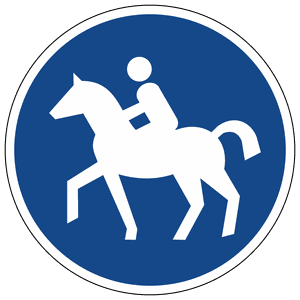

Zeichen 238
Reitweg

10 Tatbestände dazu
141030Sie hielten auf einem Reitweg (Zeichen 238).
20 €
141031
Sie hielten auf einem Reitweg (Zeichen 238) und behinderten +) dadurch Andere.
35 €
141154
Sie benutzten als Nichtberechtigter *) <einen Radweg (Zeichen 237)/ einen Reitweg (Zeichen 238)/einen gemeinsamen Geh- und Radweg (Zeichen 240)/einen getrennten Rad- und Gehweg (Zeichen 241)/eine Fahrradstraße (Zeichen 244.1)/eine Fahrradzone (Zeichen 244.3)>.
15 €
141155
Sie benutzten als Nichtberechtigter *) <einen Radweg (Zeichen 237)/ einen Reitweg (Zeichen 238)/einen gemeinsamen Geh- und Radweg (Zeichen 240)/einen getrennten Rad- und Gehweg (Zeichen 241)/eine Fahrradstraße (Zeichen 244.1)/eine Fahrradzone (Zeichen 244.3)> und behinderten +) dadurch Andere.
20 €
141156
Sie benutzten als Nichtberechtigter *) <einen Radweg (Zeichen 237)/ einen Reitweg (Zeichen 238)/einen gemeinsamen Geh- und Radweg (Zeichen 240)/einen getrennten Rad- und Gehweg (Zeichen 241)/eine Fahrradstraße (Zeichen 244.1)/eine Fahrradzone (Zeichen 244.3)> und gefährdeten +) dadurch Andere.
25 €
141157
Sie benutzten als Nichtberechtigter *) <einen Radweg (Zeichen 237)/ einen Reitweg (Zeichen 238)/einen gemeinsamen Geh- und Radweg (Zeichen 240)/einen getrennten Rad- und Gehweg (Zeichen 241)/eine Fahrradstraße (Zeichen 244.1)/eine Fahrradzone (Zeichen 244.3)>. Es kam zum Unfall.
30 €
141442
Sie parkten auf einem Reitweg (Zeichen 238).
25 €
141443
Sie parkten auf einem Reitweg (Zeichen 238) und behinderten +) dadurch Andere.
40 €
141444
Sie parkten länger als 1 Stunde auf einem Reitweg (Zeichen 238).
40 €
141445
Sie parkten länger als 1 Stunde auf einem Reitweg (Zeichen 238) und behinderten +) dadurch Andere.
50 €